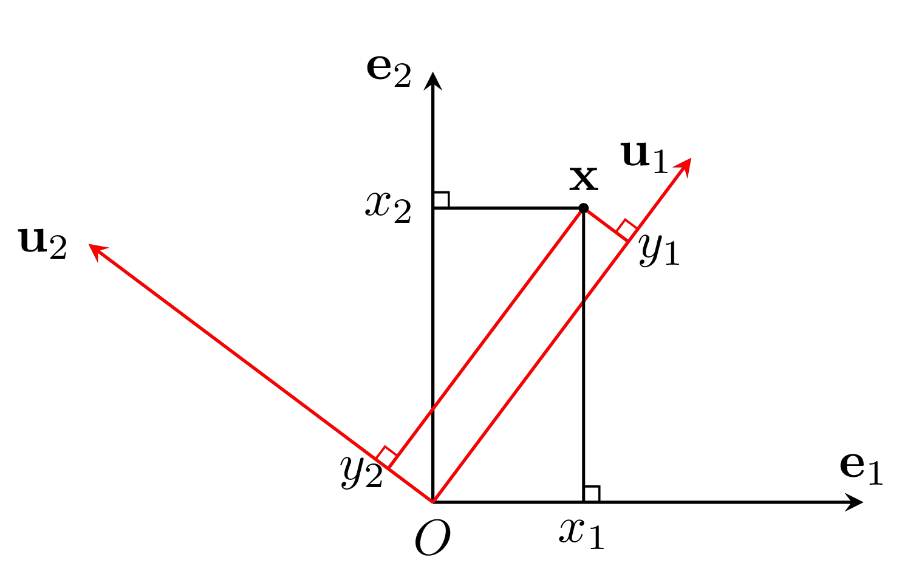
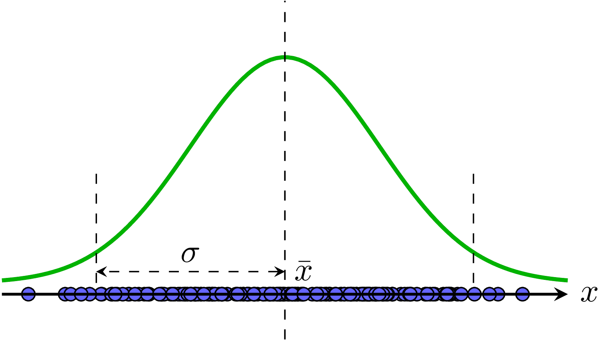

Trong trang này:
- 1. Giới thiệu
- 2. Một chút toán
- 3. Principal Component Analysis
- 4. Các bước thực hiện PCA
- 5. Thảo luận
- 6. Tài liệu tham khảo
1. Giới thiệu
Dimensionality Reduction (giảm chiều dữ liệu), như đã được đề cập một vài lần trong blog, là một trong những kỹ thuật quan trọng trong Machine Learning. Các feature vectors trong các bài toán thực tế có thể có số chiều rất lớn, tới vài nghìn. Ngoài ra, số lượng các điểm dữ liệu cũng thường rất lớn. Nếu thực hiện lưu trữ và tính toán trực tiếp trên dữ liệu có số chiều cao này thì sẽ gặp khó khăn cả về việc lưu trữ và tốc độ tính toán. Vì vậy, giảm số chiều dữ liệu là một bước quan trọng trong nhiều bài toán. Đây cũng được coi là một phương pháp nén dữ liệu.
Dimensionality Reduction, nói một cách đơn giản, là việc đi tìm một hàm số, hàm số này lấy đầu vào là một điểm dữ liệu ban đầu \(\mathbf{x} \in \mathbb{R}^D\) với \(D\) rất lớn, và tạo ra một điểm dữ liệu mới \(\mathbf{z} \in \mathbb{R}^K\) có số chiều \(K < D\).
Và như thường lệ, tôi sẽ trình bày một phương pháp đơn giản nhất trong các thuật toán Dimensionality Reduction dựa trên một mô hình tuyến tính. Phương pháp này có tên là Principal Component Analysis (PCA), tức Phân tích thành phần chính. Phương pháp này dựa trên quan sát rằng dữ liệu thường không phân bố ngẫu nhiên trong không gian mà thường phân bố gần các đường/mặt đặc biệt nào đó. PCA xem xét một trường hợp đặc biệt khi các mặt đặc biệt đó có dạng tuyến tính là các không gian con (subspace).
Bài viết này dành cho nhiều đối tượng độc giả khác nhau:
-
Nếu bạn cần ôn tập lại các kiến thức về hệ độc lập tuyến tính, kỳ vọng, phương sai, ma trận hiệp phương sai, bạn có thể đọc Mục 2.
-
Nếu bạn muốn hiểu nguồn gốc, ý tưởng đứng sau PCA, tại sao PCA lại được thực hiện như vậy, bạn có thể tìm được ở Mục 3.
-
Nếu bạn không muốn đi sâu vào toán mà chỉ cần hiểu các bước thực hiện PCA, bạn có thể tới ngay Mục 4.
-
Nếu bạn không muốn hiểu các bước thực hiện mà chỉ muốn biết hàm số thực hiện PCA, một vài ứng dụng của PCA, và có thể thêm các phần mở rộng của PCA, bạn có thể thấy PCA phần 2 có ích, dự tính được ra mắt sau đây một tuần.
-
Nếu tôi là các bạn, tôi sẽ đọc hết cả bài.
Trước khi đi vào chi tiết của PCA, chúng ta cùng điểm lại một chút về Đại số tuyến tính và Thống kê.
2. Một chút toán
2.1. Norm 2 của ma trận
Chúng ta vẫn thường nhắc nhiều đến norm cho vector nhưng chưa thực sự làm việc nhiều với norm của ma trận (ngoài Frobenius norm). Trong mục này, chúng ta sẽ làm quen với 1 lớp các norm cho ma trận được định nghĩa dựa trên norm của vector. Lớp các norms này còn được gọi là Induced Norms.
Giả sử hàm số \(||\mathbf{x}||_{\alpha}\) là một norm bất kỳ của vector \(\mathbf{x}\). Ứng với norm này, định nghĩa norm tương ứng cho ma trận \(\mathbf{A}\): \[ ||\mathbf{A}||_{\alpha} = \max_{\mathbf{x}} \frac{||\mathbf{Ax}||_{\alpha}}{||\mathbf{x}||_{\alpha}} \]
chú ý rằng ma trận \(\mathbf{A}\) có thể không vuông và số cột của nó bằng với số chiều của \(\mathbf{x}\). Như vậy, bản thân việc tính toán norm của ma trận là việc giải một bài toán tối ưu. Chú ý rằng hàm tối ưu có cả tử số và mẫu số là các norm trên vectors.
Chúng ta sẽ quan tâm nhiều hơn tới norm 2. Norm 2 của ma trận được định nghĩa là: \[ ||\mathbf{A}||_2 = \max_{\mathbf{x}} \frac{||\mathbf{Ax}||_2}{||\mathbf{x}||_2} ~~~ (1) \]
Nhận thấy rằng nếu \(\mathbf{x}\) là nghiệm của bài toán tối ưu \((1)\) thì \(k\mathbf{x}\) cũng là nghiệm với \(k\) là một số thực khác không bất kỳ. Không mất tính tổng quát, ta có thể giả sử mẫu số bằng 1. Khi đó, bài toán tối ưu \((1)\) có thể được viết dưới dạng:
\[
||\mathbf{A}||_2 = \max_{||\mathbf{x}||_2 = 1} ||\mathbf{Ax}||_2 ~~~ (2)
\]
Nói cách khác, ta cần đi tìm \(\mathbf{x}\) sao cho:
\[
\begin{eqnarray}
\mathbf{x} &=& \text{argmax}_{\mathbf{x}} ||\mathbf{Ax}||_2^2 & \
\text{s.t.: } && ||\mathbf{x}||_2^2 = 1 & (3)
\end{eqnarray}
\]
Ở đây, các norm 2 đã được bình phương lên để tránh dấu căn bậc hai. Bài toán \((3)\) có thể được giải bằng Phương pháp nhân tử Lagrange vì ràng buộc là một phương trình.
Lagrangian của Bài toán \((3)\) là: \[ \mathcal{L}(\mathbf{x}, \lambda) = ||\mathbf{Ax}||_2^2 + \lambda (1 - ||\mathbf{x}||_2^2) \]
Nghiệm của bài toán \((3)\) sẽ thoả mãn hệ phương trình:
\[
\begin{eqnarray}
\frac{\partial \mathcal{L}}{\partial \mathbf{x}} &=& 2\mathbf{A}^T\mathbf{Ax} - 2\lambda \mathbf{x} = \mathbf{0} & (4)\
\frac{\partial \mathcal{L}}{\partial \lambda} &=& 1 - ||\mathbf{x}||_2^2 = 0 & (5)
\end{eqnarray}
\]
Từ \((4)\) ta có: \[ \mathbf{A}^T\mathbf{Ax} = \lambda\mathbf{x} ~~~~ (6) \] Điều này suy ra rằng \(\lambda\) là một trị riêng của \(\mathbf{A}^T\mathbf{A}\) và \(\mathbf{x}\) là 1 vector riêng ứng với trị riêng đó. Tiếp tục nhân hai vế của \((6)\) với \(\mathbf{x}^T\) vào bên trái, ta có: \[ \mathbf{x}^T\mathbf{A}^T\mathbf{Ax} = \lambda \mathbf{x}^T\mathbf{x} = \lambda \] Nhận thấy rằng vế trái chính là \(||\mathbf{Ax}||_2^2\) chính là hàm mục tiêu trong \((3)\). Vậy hàm mục tiêu đạt giá trị lớn nhất khi \(\lambda\) đạt giá trị lớn nhất. Nói cách khác, \(\lambda\) chính là trị riêng lớn nhất của \(\mathbf{A}^T\mathbf{A}\) hay chính là singular value lớn nhất của ma trận \(\mathbf{A}\).
Như vậy, norm 2 của một ma trận chính là singular value lớn nhất của ma trận đó. Và nghiệm của bài toán \((3)\) chính một là right-singular vector ứng với singular value đó.
Với lý luận tương tự, chúng ta có thể suy ra rằng bài toán: \[ \min_{||\mathbf{x}||_2 =1} \mathbf{x}^T\mathbf{A}^T\mathbf{A}\mathbf{x} \]
có nghiệm là vector riêng ứng với trị riêng nhỏ nhất của \(\mathbf{A}^T\mathbf{A}\). Khi đó, hàm số đạt giá trị nhỏ nhất bằng chính trị riêng nhỏ nhất này.
2.2. Biễu diễn vector trong các hệ cơ sở khác nhau
Trong không gian \(D\) chiều , toạ độ của mỗi điểm được xác định dựa trên một hệ toạ độ nào đó. Ở các hệ toạ độ khác nhau, hiển nhiên là toạ độ của mỗi điểm cũng khác nhau.
Tập hợp các vector \(\mathbf{e}_1, \dots, \mathbf{e}_D\) mà mỗi vector \(\mathbf{e}_d\) có đúng 1 phần tử khác 0 ở thành phần thứ \(d\) và phần tử đó bằng 1, được gọi là hệ cơ sở đơn vị (hoặc hệ đơn vị) trong không gian \(D\) chiều. Nếu xếp các vector \(\mathbf{e}_d, d = 1, 2, \dots, D\) theo đúng thứ tự đó, ta sẽ được ma trận đơn vị \(D\) chiều.
Mỗi vector cột \(\mathbf{x} = [x_1, x_2, \dots, x_D] \in \mathbb{R}^D\), biểu diễn của nó trong hệ đơn vị là:
\[ \mathbf{x} = x_1 \mathbf{e}_1 + x_2 \mathbf{e}_2 + \dots + x_D\mathbf{e}_D \]
Giả sử có một hệ cơ sở khác \(\mathbf{u}_1, \mathbf{u}_2, \dots, \mathbf{u}_D\) (các vector này độc lập tuyến tính), vậy thì biểu diễn của vector \(\mathbf{x}\) trong hệ cơ sở mới này có dạng:
\[ \mathbf{x} = y_1 \mathbf{u}_1 + y_2 \mathbf{u}_2 + \dots + y_D\mathbf{u}_D = \mathbf{U}\mathbf{y} \]
\(\mathbf{U}\) là ma trận mà cột thứ \(d\) của nó chính là vector \(\mathbf{u}_d\). Lúc này, vector \(\mathbf{y}\) chính là biểu diễn của \(\mathbf{x}\) trong hệ cơ sở mới. Bộ các số \(y_d, d = 1, 2, \dots, D\) là duy nhất vì \(\mathbf{y}\) có thể tính được bằng: \[ \mathbf{y} = \mathbf{U}^{-1} \mathbf{x} ~~~ (7) \] với chú ý rằng \(\mathbf{U}\) là ma trận khả nghịch vì các cột của nó độc lập tuyến tính.
Trong các ma trận đóng vai trò như hệ cơ sở \(\mathbf{U}\), các ma trận trực giao, tức \(\mathbf{U}^T\mathbf{U} = \mathbf{I}\), được quan tâm nhiều hơn vì nghịch đảo của chúng chính là chuyển vị của chúng:
\[ \mathbf{U}^{-1} = \mathbf{U}^T \] Khi đó, \(\mathbf{y}\) trong \((7)\) có thể được tính một cách nhanh chóng:
\[ \mathbf{y} = \mathbf{U}^{T} \mathbf{x} \] từ đó suy ra: \(y_i = \mathbf{x}^T \mathbf{u}_i = \mathbf{u}_i^T\mathbf{x}, i= 1, 2, \dots, D\).
Có thể nhận thấy rằng vector \(\mathbf{0}\) được biểu diễn như nhau trong mọi hệ cơ sở. Hình 1 dưới đây là 1 ví dụ về việc chuyển hệ cơ sở:
|  | Hình 1: Chuyển đổi toạ độ trong các hệ cơ sở khác nhau. |
Việc chuyển đổi hệ cơ sở sử dụng ma trận trực giao có thể được coi như một phép xoay trục toạ độ. Nhìn theo một cách khác, đây cũng chính là một phép xoay vector dữ liệu theo chiều ngược lại.
2.3. Trace
Hàm số trace xác định trên tập các ma trận vuông được sử dụng rất nhiều trong tối ưu vì những tính chất đẹp của nó. Hàm trace trả về tổng các phần tử trên đường chéo của một ma trận vuông.
Các tính chất quan trọng của hàm trace, với giả sử rằng các ma trận trong hàm trace là vuông và các phép nhân ma trận thực hiện được:
-
\(\text{trace}(\mathbf{A}) = \text{trace}(\mathbf{A}^T)\)
-
\(\text{trace}(k\mathbf{A}) = k\text{trace}(\mathbf{A})\) với \(k\) là một số bất kỳ.
-
\(\text{trace}(\mathbf{AB}) = \text{trace}(\mathbf{BA})\)
-
\(||\mathbf{A}||_F^2 = \text{trace}(\mathbf{A}^T\mathbf{A}) = \text{trace}(\mathbf{A}\mathbf{A}^T)\) với \(\mathbf{A}\) là ma trận bất kỳ, có thể không vuông.
-
\(\text{trace}(\mathbf{A}) = \sum_{i = 1}^D \lambda_i \) với \(\mathbf{A}\) là một ma trận vuông và \(\lambda_i, i = 1, 2, \dots, N\) là toàn bộ các trị riêng của nó, có thể phức hoặc lặp. Việc chứng minh tính chất này có thể được dựa trên ma trận đặc trưng của \(\mathbf{A}\) và định lý Viète. Tôi xin được bỏ qua.
2.4. Kỳ vọng và ma trận hiệp phương sai
2.4.1. Dữ liệu một chiều
Cho \(N\) giá trị \(x_1, x_2, \dots, x_N\). Kỳ vọng và phương sai của bộ dữ liệu này được định nghĩa là:
\[
\begin{eqnarray}
\bar{x} &=& \frac{1}{N}\sum_{n=1}^N x_n = \frac{1}{N}\mathbf{X1}\
\sigma^2 &=& \frac{1}{N} \sum_{n=1}^N (x_n - \bar{x})^2
\end{eqnarray}
\]
với \(\mathbf{1} \in \mathbb{R}^N\) là vector cột chứa toàn phần tử 1.
Kỳ vọng đơn giản là trung bình cộng của toàn bộ các giá trị. Phương sai là trung bình cộng của bình phương khoảng cách từ mỗi điểm tới kỳ vọng. Phương sai càng nhỏ thì các điểm dữ liệu càng gần với kỳ vọng, tức các điểm dữ liệu càng giống nhau. Phương sai càng lớn thì ta nói dữ liệu càng có tính phân tán. Ví dụ về kỳ vọng và phương sai của dữ liệu một chiều có thể được thấy trong Hình 2a).
Căn bậc hai của phương sai, \(\sigma\) còn được gọi là độ lệch chuẩn (standard deviation) của dữ liệu.
2.4.2. Dữ liệu nhiều chiều
Cho \(N\) điểm dữ liệu được biểu diễn bởi các vector cột \(\mathbf{x}_1, \dots, \mathbf{x}_N\), khi đó, vector kỳ vọng và ma trận hiệp phương sai của toàn bộ dữ liệu được định nghĩa là:
\[
\begin{eqnarray}
\bar{\mathbf{x}} &=& \frac{1}{N} \sum_{n=1}^N \mathbf{x}_n \
\mathbf{S} &=& \frac{1}{N}\sum_{n=1}^N (\mathbf{x}_n - \bar{\mathbf{x}})(\mathbf{x}_n - \bar{\mathbf{x}})^T = \frac{1}{N}\hat{\mathbf{X}}\hat{\mathbf{X}}^T
\end{eqnarray}
\]
Trong đó \(\hat{\mathbf{X}}\) được tạo bằng cách trừ mỗi cột của \(\mathbf{X}\) đi \(\bar{\mathbf{x}}\):
\[
\hat{\mathbf{x}}_n = \mathbf{x}_n - \bar{\mathbf{x}}
\]
Các công thức này khá tương đồng với các công thức cho dữ liệu 1 chiều phía trên. Có một vài điểm lưu ý:
-
Ma trận hiệp phương sai là một ma trận đối xứng, hơn nữa, nó là một ma trận nửa xác định dương.
-
Mọi phần tử trên đường chéo của ma trận hiệp phương sai là các số không âm. Chúng cũng chính là phương sai của từng chiều của dữ liệu.
-
Các phần tử ngoài đường chéo \(s_{ij}, i \neq j\) thể hiện sự tương quan giữa thành phần thứ \(i\) và thứ \(j\) của dữ liệu, còn được gọi là hiệp phương sai. Giá trị này có thể dương, âm hoặc bằng 0. Khi nó bằng 0, ta nói rằng hai thành phần \(i, j\) trong dữ liệu là không tương quan (uncorrelated).
-
Nếu ma trận hiệp phương sai là ma trận đường chéo, ta có dữ liệu hoàn toàn không tương quan giữa các chiều.
Ví dụ về dữ liệu không tương quan và tương quan được cho trong Hình 2bc).
|
 a) |
 b) |
 c) |
Hình 2: Ví dụ về kỳ vọng và phương sai. a) Trong không gian 1 chiều. b) Không gian 2 chiều mà hai chiều không tương quan. Trong trường hợp này, ma trận hiệp phương sai là ma trận đường chéo với hai phần tử trên đường chéo là \(\sigma_1, \sigma_2\), đây cũng chính là hai trị riêng của ma trận hiệp phương sai và là phương sai của mỗi chiều dữ liệu. c) Dữ liệu trong không gian hai chiều có tương quan. Theo mỗi chiều, ta có thể tính được kỳ vọng và phương sai. Phương sai càng lớn thì dữ liệu trong chiều đó càng phân tán. Trong ví dụ này, dữ liệu theo chiều thứ hai phân tán nhiều hơn so so với chiều thứ nhất. |
3. Principal Component Analysis
Cách đơn giản nhất để giảm chiều dữ liệu từ \(D\) về \(K < D\) là chỉ giữ lại \(K\) phần tử quan trọng nhất. Tuy nhiên, việc làm này chắc chắn chưa phải tốt nhất vì chúng ta chưa biết xác định thành phần nào là quan trọng hơn. Hoặc trong trường hợp xấu nhất, lượng thông tin mà mỗi thành phần mang là như nhau, bỏ đi thành phần nào cũng dẫn đến việc mất một lượng thông tin lớn.
Tuy nhiên, nếu chúng ta có thể biểu diễn các vector dữ liệu ban đầu trong một hệ cơ sở mới mà trong hệ cơ sở mới đó, tầm quan trọng giữa các thành phần là khác nhau rõ rệt, thì chúng ta có thể bỏ qua những thành phần ít quan trọng nhất.
Lấy một ví dụ về việc có hai camera đặt dùng để chụp một con người, một camera đặt phía trước người và một camera đặt trên đầu. Rõ ràng là hình ảnh thu được từ camera đặt phía trước người mang nhiều thông tin hơn so với hình ảnh nhìn từ phía trên đầu. Vì vậy, bức ảnh chụp từ phía trên đầu có thể được bỏ qua mà không có quá nhiều thông tin về hình dáng của người đó bị mất.
PCA chính là phương pháp đi tìm một hệ cơ sở mới sao cho thông tin của dữ liệu chủ yếu tập trung ở một vài toạ độ, phần còn lại chỉ mang một lượng nhỏ thông tin. Và để cho đơn giản trong tính toán, PCA sẽ tìm một hệ trực chuẩn để làm cơ sở mới.
Giả sử hệ cơ sở trực chuẩn mới là \(\mathbf{U}\) và chúng ta muốn giữ lại \(K\) toạ độ trong hệ cơ sở mới này. Không mất tính tổng quát, giả sử đó là \(K\) thành phần đầu tiên. Quan sát Hình 3 dưới đây:

Quan sát hình vẽ trên với cơ sở mới \(\mathbf{U} = [\mathbf{U}_K, \bar{\mathbf{U}}_K]\) là một hệ trực chuẩn với \(\mathbf{U}_K\) là ma trận con tạo bởi \(K\) cột đầu tiên của \(\mathbf{U}\). Với cơ sở mới này, ma trận dữ liệu có thể được viết thành: \[ \mathbf{X} = \mathbf{U}_K \mathbf{Z} + \bar{\mathbf{U}}_K \mathbf{Y} ~~~~ (8) \] Từ đây ta cũng suy ra:
\[
\begin{eqnarray}
\left[
\begin{matrix}
\mathbf{Z} \\ \mathbf{Y}
\end{matrix}
\right] =
\left[
\begin{matrix}
\mathbf{U}_K^T \\ \bar{\mathbf{U}}_K^T
\end{matrix}
\right]\mathbf{X}
\Rightarrow
\begin{matrix}
\mathbf{Z} = \mathbf{U}_K^T \mathbf{X} \
\mathbf{Y} = \bar{\mathbf{U}}_K^T\mathbf{X}
\end{matrix}
\end{eqnarray} ~~~~ (9)
\]
Mục đích của PCA là đi tìm ma trận trực giao \(\mathbf{U}\) sao cho phần lớn thông tin được giữ lại ở phần màu xanh \(\mathbf{U}_K \mathbf{Z}\) và phần màu đỏ \(\bar{\mathbf{U}}_K\mathbf{Y}\) sẽ được lược bỏ và thay bằng một ma trận không phụ thuộc vào từng điểm dữ liệu. Nói cách khác, ta sẽ xấp xỉ \(\mathbf{Y}\) bởi một ma trận có toàn bộ các cột là như nhau. Chú ý rằng các cột này có thể phụ thuộc vào dữ liệu training nhưng không phụ thuộc vào dữ liệu test, các bạn sẽ thấy rõ hơn khi lập trình mà tôi sẽ trình bày trong bài tiếp theo. Gọi mỗi cột đó là \(\mathbf{b}\) và có thể coi nó là bias, khi đó, ta sẽ xấp xỉ:
\[ \mathbf{Y} \approx \mathbf{b1}^T \] Trong đó \(\mathbf{1}^T\in \mathbb{R}^{1 \times N}\) là vector hàng có toàn bộ các phần tử bằng 1. Giả sử đã tìm được \(\mathbf{U}\), ta cần tìm \(\mathbf{b}\) thoả mãn: \[ \mathbf{b} = \text{argmin}_{\mathbf{b}} ||\mathbf{Y} - \mathbf{b1}^T||_F^2 = \text{argmin}_{\mathbf{b}} ||\bar{\mathbf{U}}_K^T\mathbf{X} - \mathbf{b1}^T||_F^2 \]
Giải phương trình đạo hàm theo \(\mathbf{b}\) của hàm mục tiêu bằng 0: \[ (\mathbf{b1}^T - \bar{\mathbf{U}}_K^T\mathbf{X})\mathbf{1} = 0 \Rightarrow N\mathbf{b} = \bar{\mathbf{U}}_K^T \mathbf{X1} \Rightarrow \mathbf{b} = \bar{\mathbf{U}}_K^T \bar{\mathbf{x}} \]
Như vậy, việc tính toán sẽ thuận tiện hơn nhiều nếu vector kỳ vọng \(\bar{\mathbf{x}} = \mathbf{0}\). Việc này có thể đạt được nếu ngay từ đầu, chúng ta trừ mỗi vector dữ liệu đi vector kỳ vọng của toàn bộ dữ liệu. Đây chính là các bước đầu tiên của PCA.
Với giá trị \(\mathbf{b}\) tìm được này, dữ liệu ban đầu sẽ được xấp xỉ với:
\[ \mathbf{X} \approx \tilde{\mathbf{X}} = \mathbf{U}_K \mathbf{Z} + \bar{\mathbf{U}}_K \bar{\mathbf{U}}_K^T\bar{\mathbf{x}}\mathbf{1}^T ~~~ (10) \]
Kết hợp \((8), (9), (10)\) ta định nghĩa hàm mất mát chính như sau: \[ J = \frac{1}{N} || \mathbf{X} - \tilde{\mathbf{X}}||_F^2 = \frac{1}{N} ||\bar{\mathbf{U}}_K \bar{\mathbf{U}}_K^T \mathbf{X} - \bar{\mathbf{U}}_K \bar{\mathbf{U}}_K^T \bar{\mathbf{x}}\mathbf{1}^T||_F^2 ~~~~ (11) \]
Chú ý rằng, nếu các cột của một ma trận \(\mathbf{V}\) tạo thành một hệ trực chuẩn thì với một ma trận \(\mathbf{W}\) bất kỳ, ta luôn có: \[ ||\mathbf{VW}||_F^2 = \text{trace} (\mathbf{W}^T\mathbf{V}^T\mathbf{V} \mathbf{W}) = \text{trace}(\mathbf{W}^T\mathbf{W}) = ||\mathbf{W}||_F^2 \]
Vì vậy hàm mất mát trong \((11)\) có thể viết lại thành:
\[
\begin{eqnarray}
J &=& \frac{1}{N} || \bar{\mathbf{U}}_K^T (\mathbf{X} - \bar{\mathbf{x}}\mathbf{1})^T||_F^2 = \frac{1}{N} ||\bar{\mathbf{U}}_K^T\hat{\mathbf{X}} ||_F^2& \
&=& \frac{1}{N} ||\hat{\mathbf{X}}^T \bar{\mathbf{U}}_K ||_F^2 =
\frac{1}{N}\sum_{i = K+1}^D ||\hat{\mathbf{X}}^T\mathbf{u}_i ||_2^2& \
&=& \frac{1}{N} \sum_{i=K+1}^D \mathbf{u}_i^T\hat{\mathbf{X}}\hat{\mathbf{X}}^T \mathbf{u}_i& \
&=& \sum_{i=K+1}^D \mathbf{u}_i^T\mathbf{S} \mathbf{u}_i & (12)
\end{eqnarray}
\]
Với \(\hat{\mathbf{X}} = \mathbf{X} - \bar{\mathbf{x}}\mathbf{1}^T\) là dữ liệu đã chuẩn hoá và với \(\mathbf{S}\) là ma trận hiệp phương sai của dữ liệu. Ta gọi ma trận này \(\hat{\mathbf{X}}\) là zero-corrected data hoặc dữ liệu đã được chuẩn hoá. Có thể nhận thấy \(\hat{\mathbf{x}}_n = \mathbf{x}_n - \bar{\mathbf{x}}\).
Công việc còn lại là tìm các \(\mathbf{u}_i\) để mất mát là nhỏ nhất. Trước hết, chúng ta có một nhận xét thú vị. Nhắc lại định nghĩa ma trận hiệp phương sai \(\mathbf{S} = \frac{1}{N} \hat{\mathbf{X}}^T\hat{\mathbf{X}}\). Với ma trận \(\mathbf{U}\) trực giao bất kỳ, thay \(K = 0\) vào \((12)\) ta có:
\[
\begin{eqnarray}
L &=& \sum_{i=1}^D \mathbf{u}_i^T\mathbf{Su}_i = \frac{1}{N} ||\hat{\mathbf{X}}^T\mathbf{U}||_F^2 \
&=& \frac{1}{N} \text{trace}(\hat{\mathbf{X}}^T\mathbf{U} \mathbf{U}^T \hat{\mathbf{X}}) & (12) \
&=& \frac{1}{N} \text{trace} (\hat{\mathbf{X}}^T \hat{\mathbf{X}}) & (13) \
&=& \frac{1}{N} \text{trace} (\hat{\mathbf{X}} \hat{\mathbf{X}}^T) & (14) \
&=& \text{trace} (\mathbf{S}) = \sum_{i=1}^D \lambda_i & (16)
\end{eqnarray}
\]
Với \(\lambda_1 \geq \lambda_2 \geq \dots \geq \lambda_D \geq 0\) là các trị riêng của ma trận nửa xác định dương \(\mathbf{S}\). Chú ý rằng các trị riêng này là thực và không âm.
Như vậy \(L\) không phụ thuộc vào cách chọn ma trận trực giao \(\mathbf{U}\) và bằng tổng các phần tử trên đường chéo của \(\mathbf{S}\). Nói cách khác, \(L\) chính là tổng của các phương sai theo từng thành phần của dữ liệu ban đầu.
Vì vậy, việc tối thiểu hàm mất mát \(J\) được cho bởi \((13)\) tương đương với việc tối đa: \[ F = L - J = \sum_{i=1}^K \mathbf{u}_i \mathbf{S} \mathbf{u}_i^T \]
Định lý 1: \(F\) đạt giá trị lớn nhất bằng \(\sum_{i=1}^K \lambda_i\) khi \(\mathbf{u}_i\) là các vector riêng có norm 2 bằng 1 ứng với các trị riêng này. Tất nhiên, chúng ta không quên điều kiện trực giao giữa các \(\mathbf{u}_i\).
Chú ý rằng \(\lambda_i, i = 1, \dots, K\) chính là \(K\) trị riêng lớn nhất của ma trận hiệp phương sai \(\mathbf{S}\). Trị riêng lớn nhất \(\lambda_1\) của ma trận này còn được gọi là Thành phần chính thứ nhất (First Principal Component), trị riêng thứ hai \(\lambda_2\) còn được gọi là Thành phần chính thứ hai, etc. Chính vì vậy, phương pháp này có tên gọi là Phân tích thành phần chính - Principal Component Analysis. Ta chỉ giữ lại \(K\) thành phần chính của dữ liệu khi muốn giảm số chiều dữ liệu. Để có cái nhìn trực quan hơn, chúng ta cùng theo dõi Hình dưới đây:
 |
Hình 4: PCA dưới góc nhìn Thống kê. PCA có thể được coi là phương pháp đi tìm một hệ cơ sở trực chuẩn đóng vai trò một phép xoay, sao cho trong hệ cơ sở mới này, phương sai theo một số chiều nào đó là rất nhỏ, và ta có thể bỏ qua. |
Trong không gian ban đầu với các vector cơ sở màu đen \(\mathbf{e}_1, \mathbf{e}_2\), phương sai theo mỗi chiều dữ liệu đều lớn. Trong không gian mới với các vector cơ sở màu đỏ \(\mathbf{u}_1, \mathbf{u}_2\), phương sai theo chiều thứ hai \(\hat{\sigma}_2\) rất nhỏ so với \(\hat{\sigma}_1\). Điều này nghĩa là khi chiếu dữ liệu lên \(\mathbf{u}_2\) ta được các điểm rất gần nhau và gần với kỳ vọng theo chiều đó. Trong trường hợp này, kỳ vọng theo mọi chiều bằng 0 nên ta có thể thay thế toạ độ theo chiều \(\mathbf{u}_2\) bằng 0. Rõ ràng là nếu dữ liệu có phương sai càng nhỏ theo một chiều nào đó thì khi xấp xỉ chiều đó bằng một hằng số, sai số xảy ra càng nhỏ. PCA thực chất là đi tìm một phép xoay tương ứng với một ma trận trực giao sao cho trong hệ toạ độ mới, tồn tại các chiều có phương sai nhỏ mà ta có thể bỏ qua; ta chỉ cần giữ lại các chiều/thành phần khác quan trọng hơn. Như đã chứng minh ở trên, tổng phương sai theo mọi chiều trong hệ cơ sở nào cũng là như nhau và bằng tổng các trị riêng của ma trận hiệp phương sai. Vì vậy, PCA còn được coi là phương pháp giảm số chiều dữ liệu mà giữ được tổng phương sai còn lại là lớn nhất.
Tôi sẽ bỏ qua phần chứng minh của Định lý 1. Tuy nhiên, cũng nêu một vài ý để bạn đọc có thể hình dung:
Khi \(K = 1\). Ta cần giải bài toán:
\[
\begin{eqnarray}
\max_{\mathbf{u}_1} &\mathbf{u}_1^T\mathbf{S} \mathbf{u}_1 \
\text{s.t.:} &||\mathbf{u}_1||_2 = 1
\end{eqnarray}
\]
Như đã đề cập ở phía trên, hàm mục tiêu đạt giá trị lớn nhất bằng \(\lambda_1\) khi \(\mathbf{u}_1\) là một vector riêng của ma trận hiệp phương sai \(\mathbf{S}\) tương ứng với trị riêng \(\lambda_1\). Vậy định lý đúng với \(K = 1\)
Giả sử \(\mathbf{u}_1\) đã là vector riêng ứng với trị riêng lớn nhất của \(\mathbf{S}\) thế thì nghiệm \(\mathbf{u}_2\) của bài toán tối ưu:
\[
\begin{eqnarray}
\max_{\mathbf{u}_2} &\mathbf{u}_2^T\mathbf{S} \mathbf{u}_2 &\
\text{s.t.} &||\mathbf{u}_2||_2 = 1 & (21)\
& \mathbf{u}_2^T \mathbf{u}_1 = 0 &
\end{eqnarray}
\]
là một vector riêng của \(\mathbf{S}\) ứng với trị riêng lớn thứ hai \(\lambda_2\) của nó. Chú ý rằng \(\lambda_2\) có thể bằng \(\lambda_1\) nếu không gian riêng ứng với \(\lambda_1\) có số rank lớn hơn 1.
Nhận định này có thể được chứng minh bằng phương pháp nhân tử Lagrange. Thật vậy, Lagrangian của bài toán \((21)\) là: \[ \mathcal{L}( \mathbf{u}_2, \nu_1, \nu_2) = \mathbf{u}_2^T\mathbf{S} \mathbf{u}_2 + \nu_1\mathbf{u}_1^T\mathbf{u}_2 + \nu_2(1 - \mathbf{u}_2^T\mathbf{u}_2) \]
Ta cần giải hệ phương trình đạo hàm của \(\mathcal{L}\) theo từng biến bằng 0:
\[
\begin{eqnarray}
\frac{\partial \mathcal{L}}{\partial \mathbf{u}_2} &=& 2 \mathbf{Su}_2 + \nu_1 \mathbf{u}_1 - 2\nu_2\mathbf{u}_2 = 0 & (22)\
\frac{\partial \mathcal{L}}{\partial \nu_1} &=& \mathbf{u}_1^T \mathbf{u}_2 = 0 & (23)\
\frac{\partial \mathcal{L}}{\partial \nu_2} &=& 1 - \mathbf{u}_2^T \mathbf{u}_2 = 0 &(24)\
\end{eqnarray}
\]
Nhân cả hai vế của \((22)\) với \(\mathbf{u}_1^T\) vào bên trái ta có: \[ 2\mathbf{u}_1^T\mathbf{Su}_2 + \nu_1 = 0 \] Vì \(\mathbf{Su}_1 = \lambda_1 \mathbf{u}_1 \Rightarrow \mathbf{u}_1^T\mathbf{Su}_2 = \lambda_1 \mathbf{u}_1^T\mathbf{u}_2 = 0\). Từ đó suy ra \(\nu_1 = 0\) và \((22)\) lúc này tương đương với: \[ \mathbf{Su}_2 = \nu_2\mathbf{u}_2 \Rightarrow \mathbf{u}_2^T\mathbf{S} \mathbf{u}_2 = \nu_2 \] Vậy \(\mathbf{u}_2\) là một vector riêng của \(\mathbf{S}\) ứng với \(\nu_2\). Và để hàm mục tiêu đạt giá trị lớn nhất, \(\nu_2\) cần càng lớn càng tốt. Điều này dẫn đến \(\nu_2\) phải là trị riêng thứ hai của \(\mathbf{S}\).
Lập luận tương tự, ta có thể chứng minh được: Nếu \(\mathbf{u}_i, i = 1, 2, \dots, k-1\) là các vector riêng ứng với trị riêng lớn thứ \(i\) của ma trận nửa xác định dương \(\mathbf{S}\), hơn nữa, \(k-1\) vector riêng này tạo thành một hệ trực chuẩn, thế thì:
\[
\begin{eqnarray}
\max_{\mathbf{u}_k} & \mathbf{u}_k^T\mathbf{Su}_k \
\text{s.t.} & \mathbf{u}_k^T\mathbf{u}_k = 1; \
& \mathbf{u}_k^T\mathbf{u}_i = 1, i = 1,\dots, k -1
\end{eqnarray}
\]
bằng đúng với trị riêng tiếp theo \(\lambda_k\) tại \(\mathbf{u}_k\) là vector riêng ứng với trị riêng này.
4. Các bước thực hiện PCA
Từ các suy luận phía trên, ta có thể tóm tắt lại các bước trong PCA như sau:
- Tính vector kỳ vọng của toàn bộ dữ liệu: \[ \bar{\mathbf{x}} = \frac{1}{N} \sum_{n=1}^N \mathbf{x}_n \]
- Trừ mỗi điểm dữ liệu đi vector kỳ vọng của toàn bộ dữ liệu: \[ \hat{\mathbf{x}}_n = \mathbf{x}_n - \bar{\mathbf{x}} \]
- Tính ma trận hiệp phương sai: \[ \mathbf{S} = \frac{1}{N}\hat{\mathbf{X}}\hat{\mathbf{X}}^T \]
- Tính các trị riêng và vector riêng có norm bằng 1 của ma trận này, sắp xếp chúng theo thứ tự giảm dần của trị riêng.
- Chọn \(K\) vector riêng ứng với \(K\) trị riêng lớn nhất để xây dựng ma trận \(\mathbf{U}_K\) có các cột tạo thành một hệ trực giao. \(K\) vectors này, còn được gọi là các thành phần chính, tạo thành một không gian con gần với phân bố của dữ liệu ban đầu đã chuẩn hoá.
- Chiếu dữ liệu ban đầu đã chuẩn hoá \(\hat{\mathbf{X}}\) xuống không gian con tìm được.
- Dữ liệu mới chính là toạ độ của các điểm dữ liệu trên không gian mới. \[ \mathbf{Z} = \mathbf{U}_K^T\hat{\mathbf{X}} \]
Dữ liệu ban đầu có thể tính được xấp xỉ theo dữ liệu mới như sau: \[ \mathbf{x} \approx \mathbf{U}_K\mathbf{Z} + \bar{\mathbf{x}} \]
Các bước thực hiện PCA có thể được xem trong Hình dưới đây:

5. Thảo luận
Vì bài viết đã khá dài, tôi xin giữ phần còn lại của PCA cho bài viết tiếp theo. Trong bài tới, chúng ta cùng thảo luận về mối quan hệ giữa PCA và SVD, lập trình PCA, một vài ứng dụng và mở rộng của SVD. Mời các bạn đón đọc.
6. Tài liệu tham khảo
[1] Principal component analysis - Wikipedia
[2] A tutorial on Principal Components Analysis
[3] Bishop, Christopher M. “Pattern recognition and Machine Learning.”, Springer (2006). Chapter 12. (book)